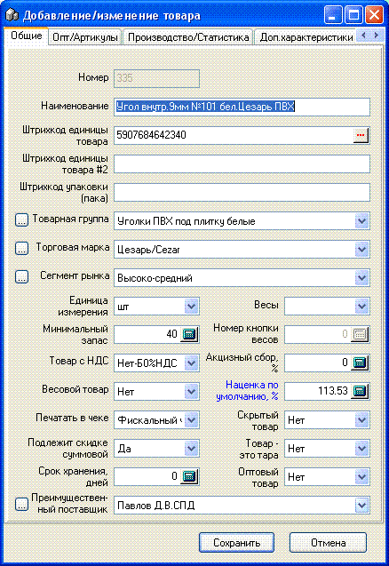
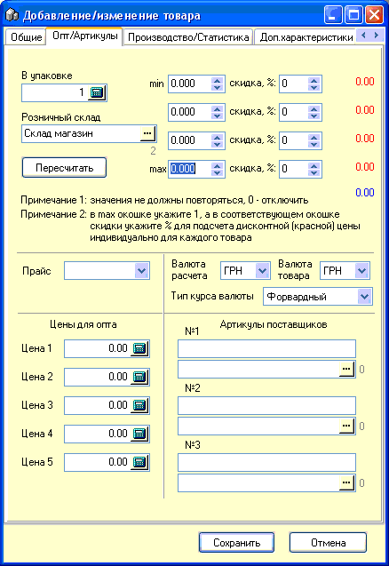
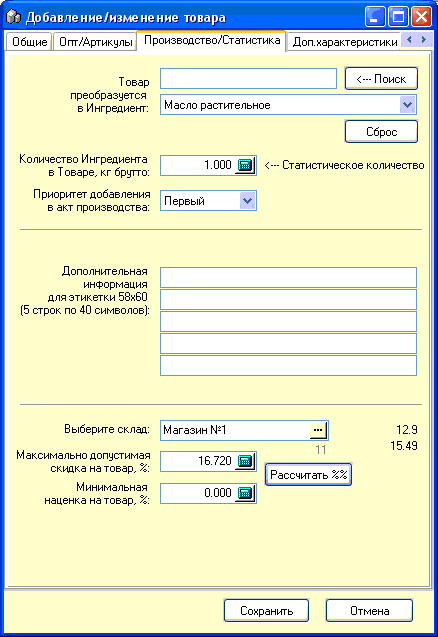
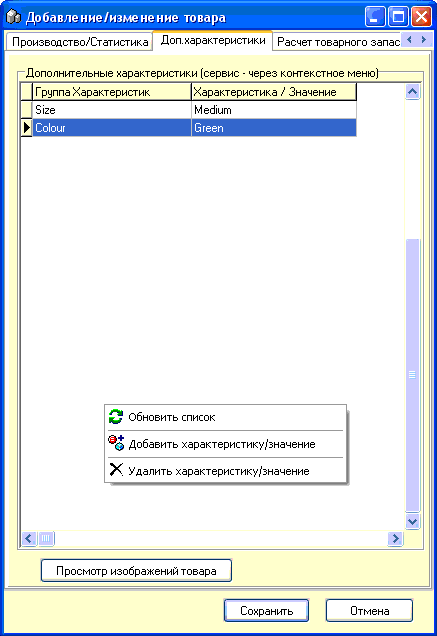
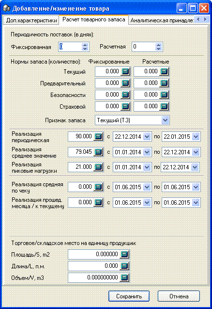
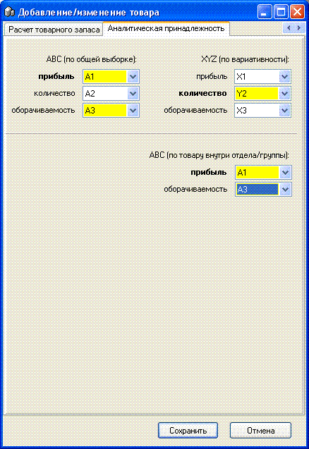

- 
- Справочник товаров - это основной справочник
используемый при работе с программой.
Номер - не редактируется, присваивается автоматически.
Наименование - введите до 77 символов (зависит от настроек).
Штрихкод единицы товара - в каком бы поле ввода на данной форме не находился бы курсор, при сканировании штрихкода на сканере, он автоматически добавиться в данное поле, кроме этого, справа от поля Вы видите кнопочку с троеточием - если товар не имеет собственного штрихкода и у Вас есть принтер штрихкодовых этикеток и разрешена работа с ним, то при нажатии на эту кнопочку автоматически будет сгенерирован внутренний штрихкод (см. подробнее в разделе "Настройки программы" подраздел "Принтер штрихкодовых этикеток". Данное поле не является уникальным, т.е. может быть занесено несколько разных товаров с одинаковым штрихкодом, при этом при их добавлении в накладную или чек по штрихкоду программа предложит на выбор список отфильтрованных по данному признаку товаров.
Штрихкод единицы товара #2 - дополнительный штрихкод для товара, используется довольно часто.
Штрихкод упаковки (пака) - для занесения штрихкода в это поле сканером необходимо, чтобы курсор стоял именно в этом окошке, этот штрихкод используется при продаже товара, чтобы быстро продать сразу упаковку товара. Примечание: данный штрихкод имеет смысл, если штрихкод на упаковке действительно отличается от штрихкода единицы товара, а также при соблюдении специальной процедуры оприходования товаров с указанием количества товаров в паке (см. раздел "Приходная накладная"). Может использоваться как третий дополнительный штрихкод для товара.
Товарная группа, Торговая марка, Единица измерения - признаки товара, которые заносятся в соответствующие справочники, подробнее см. одноименные разделы данной справки.
Минимальный запас - можно указать минимальное количество товара, при достижении остатков которого данной или меньшей цифры, он начинает отбираться в соответствующий отчет по минимальному запасу.
Товар с НДС Налоговые ставки - НетНДС-0%Б, ДаНДС-20%А, ДаНДС-20%В+АКЦИЗ-5%Г. Выберите необходимую для вашего фискального регистратора ставку для данного товара.
Весовой товар - если количества данного товара может быть дробная часть (товар делиться на части), то поставьте - Да.
 Примечание: если товар весовой и имеет штрихкод единицы товара, то при попытке
сохранить такой товар, Вы получите предупреждение и должны выбрать что-то
одно.
Примечание: если товар весовой и имеет штрихкод единицы товара, то при попытке
сохранить такой товар, Вы получите предупреждение и должны выбрать что-то
одно.
Печатать в чеке - есть три варианта: "Фискальный чек" - если есть фискальный регистратор, то печатать на него этот товар; "Нефискальный чек" - если есть нефискальный принтер, то печатать на него; "Не печатать" - никуда не печатать вообще. Примечание: нефискальный принтер по Вашему желанию может печатать и фискальные позиции тоже (см. раздел "Настройки программы" подраздел "Нефискальный принтер").
Подлежит скидке суммовой - на товар распространяются дисконтные программы как по пластиковым карточкам, так и автоматические от суммы чека. Подробнее см. раздел "Настройки программы" подраздел "Скидки".
 Примечание: данный параметр должен быть выбран "Нет", если товар является
Оптовым.
Примечание: данный параметр должен быть выбран "Нет", если товар является
Оптовым.
Срок хранения, дней - можете указать количество дней срока хранения товара, этот параметр обозначает сколько дней автоматически при приходе партии товара будет прибавляться к дате прихода, чтобы получить срок хранения партии.
Преимущественный поставщик - можно выбрать основного поставщика данного товара. Используется в некоторых режимах прихода товара и некоторых отчетах.
Весы - выберите одно из наименований занесенных в программу весов, если товар является весовым. Как занести наименования и указать характеристики весов см. раздел "Оборудование: весы с печатью".
Номер кнопки весов - номер товара внутри весов, там своя нумерация, этот номер вручную нельзя изменить, он присваивается автоматически.
Акцизный сбор, % - укажите ставку акцизного сбора, если товар подакцизный. Примечание: не всегда удобно пользоваться признаком указываемым на каждый товар в отдельности (иногда можно забыть это сделать, или наоборот, при копировании товара присвоить не тому кому нужно), поэтому на товарную группу также может налагаться аналогичный признак (подробнее см. раздел "Справочник товарных групп").
Наценка по умолчанию, % - значение наценки, которое при приходе товара будет проставляться по умолчанию на каждую приходуемую партию и иметь приоритет.
 Примечание: в программе существует 3(три) уровня наценки: 1. на товарную
группу в целом (при приходе товара из этой группы в качестве наценки партии по
умолчанию будет предлагаться это число, подробнее см. "Справочник товарных
групп"); 2. на товар индивидуально - в карточке конкретного товара, и эта
наценка имеет приоритет над групповой!; 3. Вы вручную можете установить любую
наценку, которую считаете нужной при добавлении товара в приходную
накладную.
Примечание: в программе существует 3(три) уровня наценки: 1. на товарную
группу в целом (при приходе товара из этой группы в качестве наценки партии по
умолчанию будет предлагаться это число, подробнее см. "Справочник товарных
групп"); 2. на товар индивидуально - в карточке конкретного товара, и эта
наценка имеет приоритет над групповой!; 3. Вы вручную можете установить любую
наценку, которую считаете нужной при добавлении товара в приходную
накладную.
Скрытый товар - со временем некоторые товары стают ненужными, удалить их нельзя т.к. они участвуют в оборотах и отчетах прошлых периодов, но можно пометить их как скрытые и при выборе соответствующего режима отображения в справочнике товаров (см. ниже) их не будет видно в данном справочнике.
Товар - это тара - если указать "Да", то в некоторых отчетах, данный товар будет фигурировать как возвратная тара. Эта опция работает только если это разрешено в настройках программы (см. соответствующий раздел, вкладка "Общие").
 Примечание: мы настоятельно рекомендуем создать товарную группу под названием
"Тара" и заносить именно в нее все товары, созданные с таким
признаком.
Примечание: мы настоятельно рекомендуем создать товарную группу под названием
"Тара" и заносить именно в нее все товары, созданные с таким
признаком.
Оптовый товар - на конкретно взятый товар может действовать не общая дисконтная программа, а индивидуальная, в зависимости от количества покупаемого товара. Ниже, на рисунке, показан расширенный вид карточки товара с оптовыми характеристиками.
 Примечание: заполнение полей начинайте с нижнего окошка "max", т.е. снизу
вверх от большего количества к меньшему, при этом проставляйте количество
и соответствующий % скидки. Значения не должны повторяться, нулевые значения
отключают соответствующую позицию. Параметр "В упаковке" имеет справочное
значение. Параметр "Розничный склад" (тоже справочный) позволяет указать
склад, основываясь на розничной цене которого, при нажатии кнопки
"Пересчитать" справа окна отобразятся синим - розничная цена товара, красным -
цены со скидкой на соответствующие диапазоны количеств товара.
Примечание: заполнение полей начинайте с нижнего окошка "max", т.е. снизу
вверх от большего количества к меньшему, при этом проставляйте количество
и соответствующий % скидки. Значения не должны повторяться, нулевые значения
отключают соответствующую позицию. Параметр "В упаковке" имеет справочное
значение. Параметр "Розничный склад" (тоже справочный) позволяет указать
склад, основываясь на розничной цене которого, при нажатии кнопки
"Пересчитать" справа окна отобразятся синим - розничная цена товара, красным -
цены со скидкой на соответствующие диапазоны количеств товара.

Прайс - признак используется для печати некоторых отчетов, в частности по нему можно фильтровать отчет "Остатки по поставщику+Заявка+Остатки".
Валюта расчета, Валюта товара и Тип курса валюты - признаки выводимые по умолчанию в приходной накладной. Более подробно см.раздел справки о добавлении товара в приходную накладную.
Цены для опта - иногда используются в расходной накладной, как отпускные цены.
Артикулы поставщиков - дополнительные признаки товара, которые могут выводится в некоторых отчетах и по которым можно осуществлять поиск в справочнике товаров (пример набора: "+75395178911").

Вкладка "Производство/Статистика".
Группа опций "Товар преобразуется в ингредиент" - в выпадающий список отбираются ингредиенты, а строка поиска с кнопкой "Поиск" служит для поиска по части наименования ингредиента в списке, что удобно если он очень большой. Используется выбор ингредиента, если товар преобразуется в данный ингредиент (подробнее см.раздел справки Акты Производства и Переработки и Калькуляционные карты).
Количество Ингредиента в товаре, кг брутто -
оно же
Статистическое количество - укажите фактическое содержание ингредиента по брутто в товаре из которого он получается. Например, Капуста и так в кг, значит можно оставить значение по умолчанию 1. А консерва Тунец, содержит 210 г продукта, значит нужно в данном окошке указать 0,210.
Приоритет добавления в акт производства - при автоматическом подборе недостающих товаров в Акте производства/переработки программа будет подбирать товары по возрастанию данного значения (доступно от первого до пятого). Подробнее см.раздел соответствующий раздел справки.
Дополнительная информация для этикетки 58х60 (5строк по 40 символов) - начинайте заполнение с первой строки! Такие товары, даже если они штучные, будут отбираться в список программирования присвоенных им весов с чекопечатью. Обычно данные записи содержат список ингредиентов и доп.информацию о товарах/блюдах собственного изготовления. Подробнее см.соответствующие раздел справки "Весы с печатью".
Группа опций подсчета минимальных значений скидки/наценки на товар. Подсчитанное значение, при соответствующей установленной опции в настройках программы на вкладке "Скидки" служит ограничительным значением, по которому обрезается слишком большая скидка.

Дополнительные характеристики служат для анализа в некоторых отчетах. Сервис по их созданию предоставляет Справочник дополнительных характеристик.
Просмотр изображений товара - открывает для просмотра заданную в настройках папку Pics, в которой можно хранить изображения товаровв формате jpg, именованных как [№товара]-[№изображения], например картинки товара №7 могут иметь названия 7-1.jpg, 7-2.jpg ... 7-10.jpg

Расчет товарного запаса и Аналитическая принадлежность - вкладки с набором маркетинговых и логистических характеристик товара. За дополнительной информацией и инструментарием для работы с ними обращайтесь к разработчику.